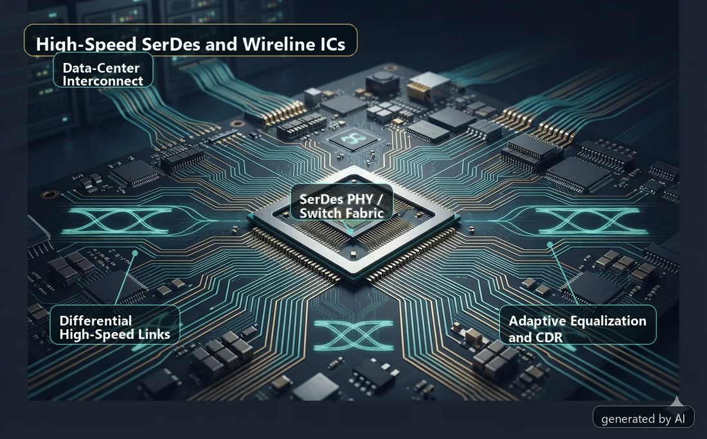
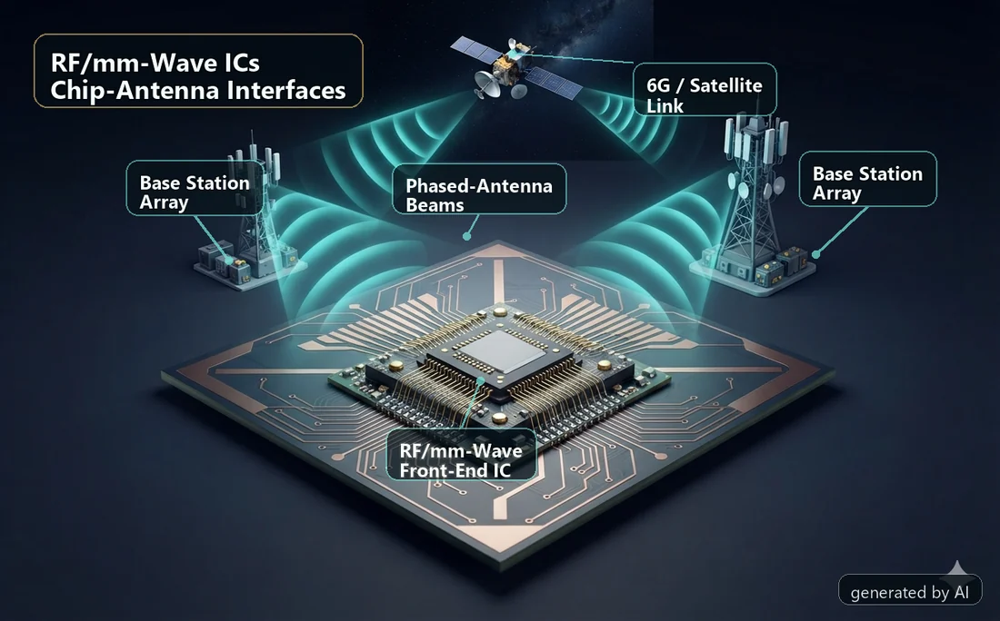
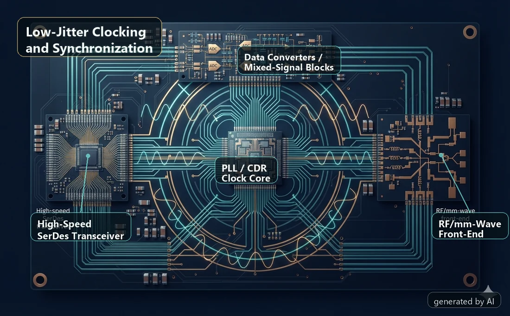
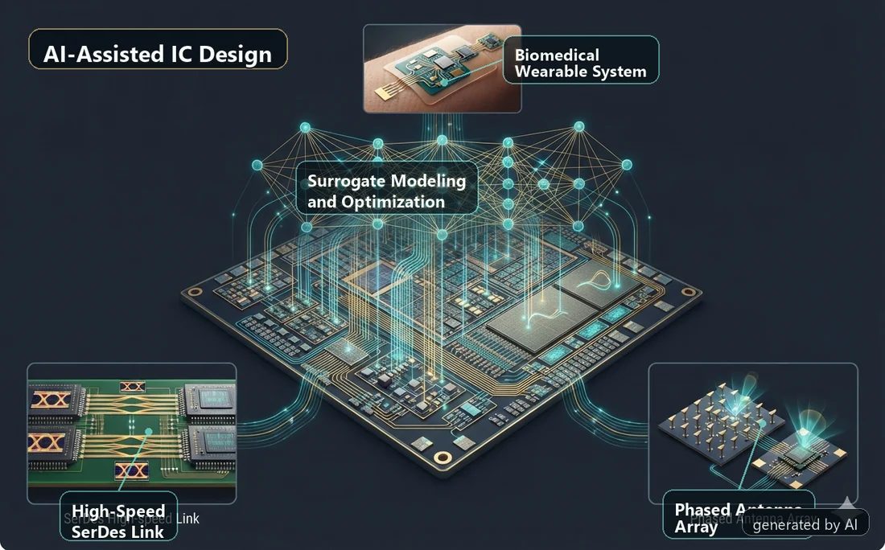
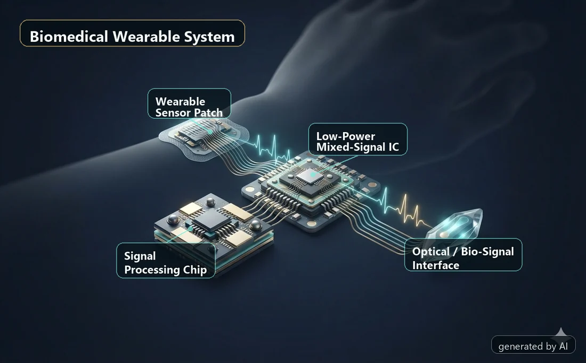
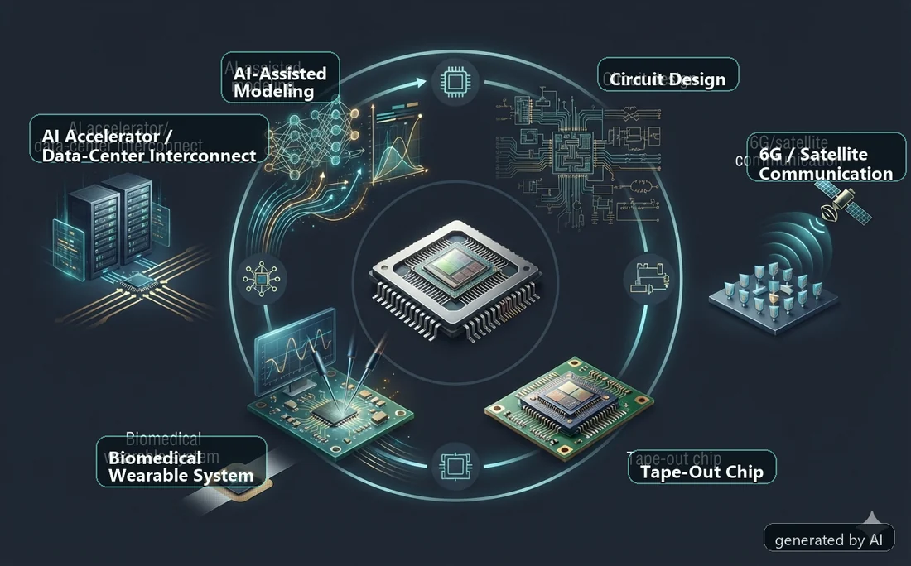

AI 计算 · 数据中心 · Chiplet
高速 SerDes 与有线互连 IC
研究在芯片、板级和系统之间传输海量数据的高速有线电路，重点包括高能效发射/接收前端、时钟数据恢复、均衡和自适应链路技术。
- SerDes 发射机与接收机
- 低功耗高速链路
- 自适应均衡与数据中心互连
研究方向
IICS Lab 围绕 AI 计算、6G 通信、数据中心互连和生物医疗系统，开展高频、高速和混合信号集成电路研究。
研究方向
我们的项目结合电路架构、AI 辅助设计方法和芯片级验证，目标是在实际系统约束下提升数据链路和前端电路的速度、能效与可靠性。

AI 计算 · 数据中心 · Chiplet
研究在芯片、板级和系统之间传输海量数据的高速有线电路，重点包括高能效发射/接收前端、时钟数据恢复、均衡和自适应链路技术。

6G · 卫星链路 · 无线感知
研究用于未来无线系统的紧凑型 RF/毫米波前端电路和芯片-天线接口，包括发射前端、相控阵模块、宽带匹配网络以及高频通信与感知的电路-系统协同设计。

高速链路 · RF 系统 · 同步
时钟是高速和高频集成电路的基础。我们研究低抖动 PLL、时钟恢复和同步技术，在功耗与集成度约束下支撑可靠数据传输和宽带前端工作。

设计自动化 · 建模 · 优化
研究 AI 和数据驱动方法如何提升电路设计效率，重点包括代理模型、主动学习仿真循环、自动尺寸优化、无源网络优化和版图感知预测。

可穿戴 · 生物医疗感知 · 健康监测
研究用于小型化感知和生物医疗系统的低功耗混合信号电路，目标是实现高能效接口和信号处理电路，支持连续、智能、可穿戴的健康监测平台。
项目链条
实验室构建彼此关联的项目体系：AI 辅助设计研究可先形成方法类成果，随后将方法用于 SerDes、时钟、RF/毫米波和混合信号电路流片，形成更有说服力的芯片级验证和 IC 论文。
